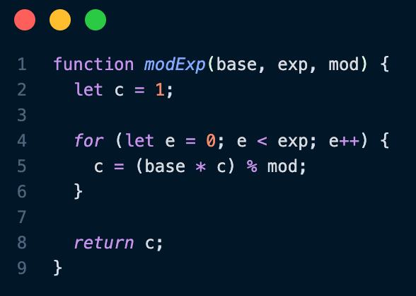

RSA is a public key cryptosystem created by Ron Rivest, Adi Shamir, and Leonard Adleman in 1977. RSA was revolutionary at its time,
and despite newer, more efficient algorithms, it is still widely used today for key transmission. Public key cryptography allows two parties
with no prior contact to communicate securely over an unsecure channel.
How It Works
RSA is based on the premise that it is computationally difficult to factor large number, but comparatively easy to multiply large numbers.
To begin, the receiving party will first generate two large prime numbers, which are called p and q. Then, they will compute n = pq, which
will serve as the public key. They will also compute ϕ(n), where ϕ is Euler's totient function. ϕ(n) is equal to the number of positive integers
less than and coprime to n. Since n is the product of p and q, ϕ(n) can be found efficiently using the formula ϕ(n) = (p-1)(q-1). p, q, and ϕ(n)
should all be kept secret. The receiver will also choose an exponent e which will serve as the other component of the public key.
Typically, e is chosen to be 65537 (216 - 1), but it can be any integer that is less than and coprime to ϕ(n). For my implementation I use 3 for simplicity.
Once both components of the public key have been published, a sender can now encrypt and send a message to the receiver using that receiver's public key.
To do this, the receiver will compute c = me mod n, where m is the message and c is the ciphertext. This can be computed efficiently using a modular
exponentiation algorithm such as the one below.

Figure 1: My JavaScript implementation of a simple modular exponentiation algorithm.
This algorithm is much more space efficient than computing me and then finding the remainder.
Once c has been computed, it can be transmitted to the receiver. To decrypt c, the receiver must compute d, the modular multiplicative inverse of e modulo ϕ(n).
This can be done efficiently using the extended euclidean algorithm. To decrypt the ciphertext,
the receiver can compute m = cd mod n.
Why It Works
The security and effectiveness of RSA depends on a few different mathematical and computational properties.
As I mentioned previously, it is much more difficult to factor a number into its two prime components than to multiply two prime numbers together.
Something that is easy to do but difficult to undo in cryptography is known as a trapdoor function, where "easy" and "difficult" are determined based on the time complexity.
When p and q are extremely large (often 2^1024, which is a 309 digit number), it becomes infeasible to factor n back into its prime components, as doing so would take all of the computers in the world more time and energy than exists in the universe.
This is critical to RSA because without this property, an attacker could easily find ϕ(n) and therefore use the extended euclidean algorithm to compute d and decrypt the message.
Another important concept to understand what makes RSA secure is the RSA problem.
The RSA problem is, given an exponent (e), and a modulus (n), and the ciphertext c, to find m.
This problem is believed to be computationally difficult, as there are no known algorithms to solve it in polynomial time.